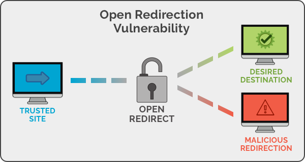

Open Redirect Vulnerability
Target : target.co.uk Weakness : OpenRedirect Date Of Scan : 2021-2-13
السلام عليكم ,
شرح طريقة اكتشاف ثغرة اعادة التوجيه OpenRedirect
ما هي ثغرة اعادة التوجيه ؟
ثغرة Open Redirect أو ما تسمي أيضا بال Unvaildated Redirect هي إحدى ثغرات الويب التي يكون سببها عدم تحقق مطوري الموقع من الروابط التي يتم توجيه المستخدمين إليها والذي يمكن أن يؤدي لعدة مخاطر أبرزهم و أكثرهم شيوعا هو هجمات ال Phishing أي التصيد الإحتيالي وهي الهجمات اللتي تعتمد علي ال Social Engeneering والإحتيال علي الضحية لجعله يضغط علي رابط ما ليتم اختراقه.

الملخص :
يقوم الموقع باعادة توجيه المستخدمين بطريقة غير امنه, يعني لايقوم بالتحقق من قيمة الباراميتر "app_url" مما يسمح للمهاجم بتوجيه المستخدمين الى مواقع ضارة عند الضغط على الرابط المصاب :
https://target.co.uk/en?$link_path=/&$app_url=
POC:
https://target.co.uk/en?$link_path=/&$app_url=https://www.attacker.com
خطر الثغرة :
يمكن للمهاجم بان يقوم باستخدام هذه الثغرة لتحويل المستخدمين الى مواقع ضارة مسيطر عليها المهاجم وايضا يقوم بتنفيذ هجمات التصيد الاحتيال
كيف يتم اصلاح الثغرة :
1- حاول تجنب عمليات اعادة التوجيه تماما ان امكن.
2- اذا قمت باستخدام عمليات اعادة التوجيه فقم بتحديد الموقع الذي تريد تحويل المستخدمين اليه فقط.
3- تنفيذ عمليات التحقق من صحة الهدف الذي سيتم توجيه المستخدمين اليه.
4- اجعل المطورين على دراية بخطر الثغرة وكيف تحدث.
المراجع :
https://www.acunetix.com/blog/web-security-zone/what-are-open-redirects
HackerOne Report
Title: Open Redirect Vulnerability Summary: I have found a Open Redirect Vulnerability on https://target.co.uk/en?$link_path=/&$app_url= The application not checking the value passed by the user to the "app_url" parameter. What is Open Redirection? An Open Redirection is when a web application or server uses an invalidated user-submitted link to redirect the user to a given website or page. Even though it seems like a harmless action to let a user decide to which page he wants to be redirected. Steps To Reproduce: 1. Open this following link https://target.co.uk/en?$link_path=/&$app_url=https://www.yahoo.com 2. you will be redirected to yahoo.com Impact: An attacker can use this vulnerability to redirect users to other malicious websites, which can be used for phishing and similar attacks